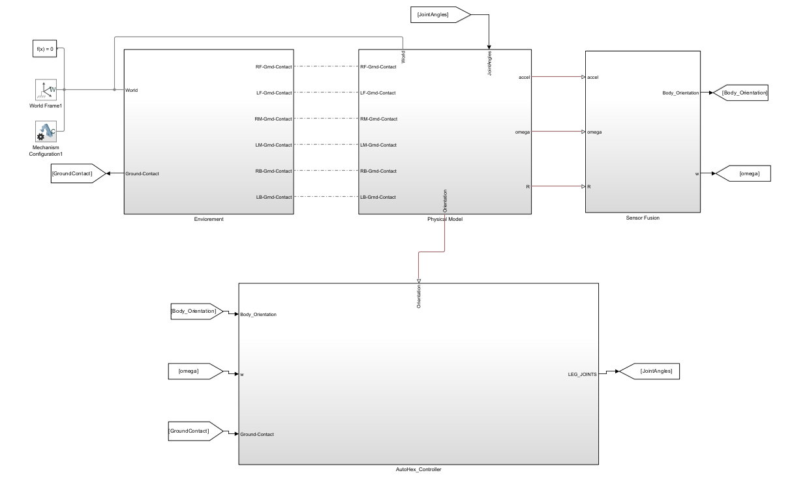
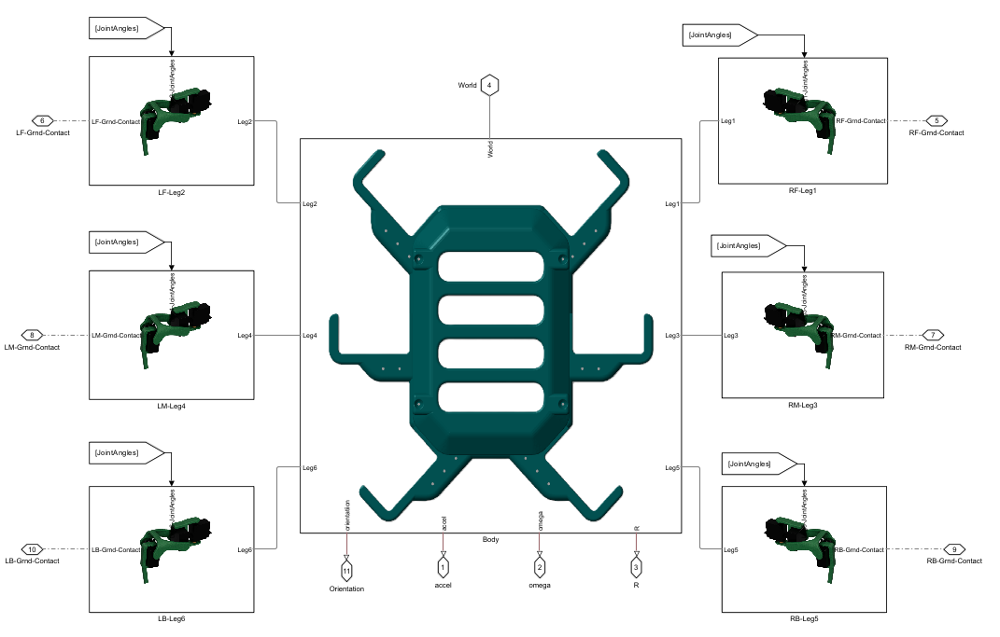
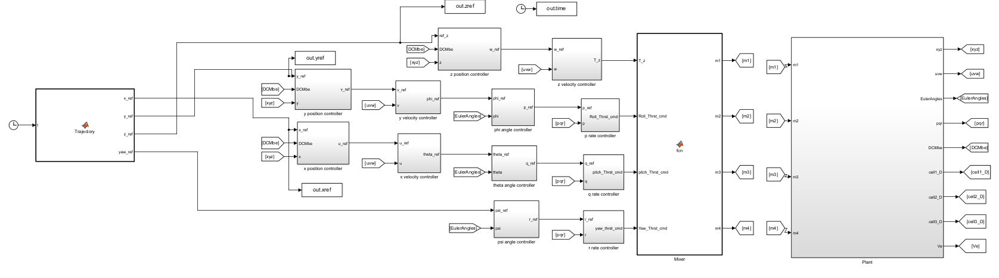
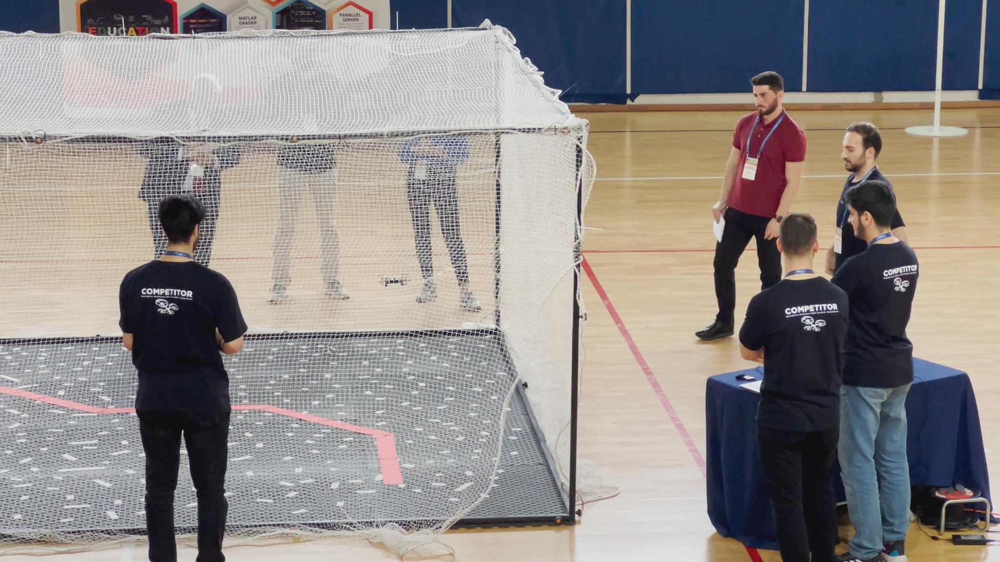

Control & Automation Engineer · Embedded Firmware · Model-Based Design
I’m an engineer who actually enjoys the messy intersection of pure math and physical hardware.
I'm a Control and Automation Engineer pursuing my M.Sc. at Yıldız Technical University. My core interest is the sim-to-real pipeline — the engineering discipline of ensuring that a system modeled mathematically actually behaves correctly when running on physical silicon under real-world conditions.
My approach follows the V-model rigorously: I design and tune complex control logic in MATLAB/Simulink, validate through MIL and SIL testing, then implement the verified algorithms as production-grade bare-metal C on STM32 platforms with a strict layered architecture (BSP → Middleware → Application). I enforce MISRA-C standards and use logic analyzers for hardware-level debugging.
I interned at Baykar Technologies in the Control, Guidance & Navigation team, working on EKF-based battery state estimation and observer-based fault detection for UAV systems. At ECEMTAG CONTROL TECHNOLOGIES I also developed transmission ECU Model Based algorithms — gear shift logic and unit tests — on a defense platform under NDA.
Outside of formal work, I co-founded RoboHexa, an independent project to rebuild the hexapod firmware from scratch as a professional-grade, MISRA-compliant codebase — transforming university prototyping code into something deployable.
"A beautiful controller that can't run on hardware is just theory. Firmware without a proper model is just guessing. The job is closing the gap between the two — and doing it in a way that can be validated, not just hoped."
The core engineering challenge was sim-to-real transfer: getting a 18-DOF system with compliant actuators (MG996R servos) to walk stably on uneven terrain without discovering algorithm failures on hardware. The solution was a rigorous SIL pipeline using Simulink C Caller blocks — the actual embedded C algorithms were executed inside the simulation model, meaning every bug caught was a real embedded bug, not a behavioral approximation.


A complete flight controller in hand-written bare-metal C on STM32F4 — no HAL abstraction for the IMU interface, no RTOS, no library flight stack. Every layer was designed from first principles: register-level SPI driver, 6-State ESEKF, and a cascaded PID attitude controller. The architecture uses strict layer separation: BSP → Middleware (EKF math) → Application (control loops).
A high-fidelity 6-DoF quadcopter simulation with a fault detection system. motor failures detected and classified using only model-based residuals. Developed within Baykar's CNS team.

A cell-level LiPo battery model built around a first-order Thevenin (1RC) equivalent circuit — chosen for real-time suitability without sacrificing the dominant dynamics. The model goes beyond basic OCV by including hysteresis-aware OCV (critical accuracy improvement at mid-SoC), temperature-dependent resistance, thermal coupling between cells, and a capacity degradation model.
Placed 2nd out of 25 national teams in the MathWorks Minidrone Competition. The challenge: design a fully autonomous GNC (Guidance, Navigation & Control) stack for a 6-DOF quadcopter that follows a line track using only onboard camera data.
My specific responsibility was the autonomous navigation and precision landing system using Stateflow. A teammate handled the image processing pipeline (vision-based line detection); I designed the state machine that consumed that output and commanded the drone through its full mission.

Independent initiative to rebuild the hexapod firmware from the ground up as a production-grade, MISRA-C compliant codebase — transforming university rapid-prototyping code into a deployable, maintainable firmware architecture. The physical hexapod platform originated as a collaborative graduation thesis; the firmware refactor is an entirely independent professional undertaking.
Worked within Baykar's CNS team. Work was entirely simulation-based in MATLAB/Simulink, focused on aerospace-grade state estimation and fault-tolerant control.
Developed transmission ECU control algorithms for a defense platform (NDA-restricted) using MATLAB/Simulink. Worked within a structured V-model development process on an existing model architecture.
Industrial automation — motion control and operator interface development.
Open to full-time roles in embedded software, control systems engineering, or model-based design.